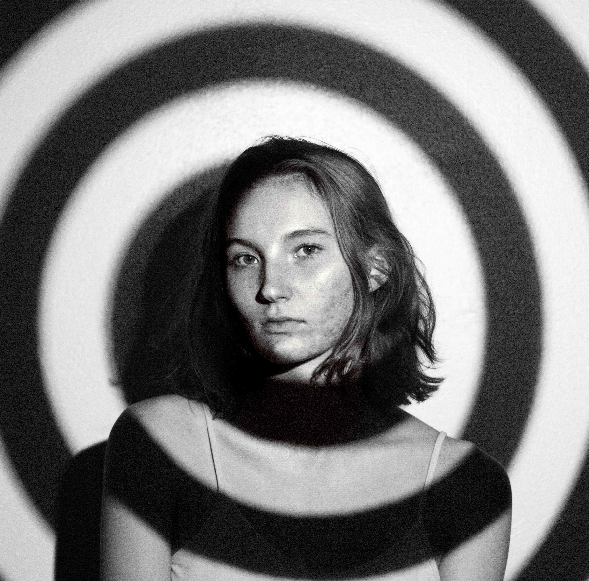

JULIA LACAVA

I'm Julia: writer of things.
I'm currently studying Writing for TV, Film and Emerging Media at Ithaca College in Ithaca, New York. I’ve been (officially) writing for six years but have a love affair with storytelling that is life-long. I hope to one day write for television, film and video games. Along with writing, I have experience in filmmaking, video editing, modeling, and on-camera work. I also programmed this website!
SELECTED WORK
Buzzsaw Magazine Contributing Writer
I write a variety of pieces from film reviews, opinion pieces to original fiction for Ithaca College’s Buzzsaw Magazine. Our mission is to “...publish original creative journalism, commentary, and satire that works to deconstruct society, pop culture, politics, college life, and dominant Western beliefs.”